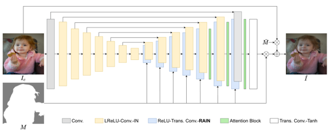

I am currently a Ph.D candidate at MediaLab in Shanghai Jiao Tong University, supervised by Prof. Li Song. My current research focuses on visual content creation, e.g., including talking head synthesis, face animation, articulated human generation. In Mar. 2021, I obtained my MSc degree at Shanghai Jiao Tong University, where I was advised by Prof. Li Song and Xiao Gu. I did my BSc at University of Science and Technology of China. I was fortunate to worked as a research intern at MSRA, and hopefully worked with Xu Tan and Runnan Li in 2021.
I'm interested in computer vision and image processing. My previous research is mainly about generating facial videos from multiple driving sources. I am open and happy to share and collaborate with you in related fields.
Memories Are One-to-many Mapping Alleviators in Talking Face Generation
Anni Tang, Tianyu He, Xu Tan, Jun Ling, Runnan Li, Sheng Zhao, Li Song, Jiang Bian
IEEE Transactions on Pattern Analysis and Machine Intelligence (TPAMI), 2024
Demo
/
paper
Introducing explicit memory and implicit memory for high-quality and lip-synchronized talking head generation.
Introducing systematical solutions for motion-stable talking face generation.

Region-aware Adaptive Instance Normalization for Image Harmonization Jun Ling, Han Xue,
Li Song, Rong Xie, Xiao Gu
IEEE/CVF Conference on Computer Vision and Pattern Recognition (CVPR), 2021
Code
/
arXiv
Proposing region-wise adaptive instance normalization for image harmonization.
Toward Fine-grained Facial Expression Manipulation Jun Ling, Han Xue,
Li Song, Yunhui Zhu, Rong Xie, Xiao Gu
European Conference on Computer Vision (ECCV), 2020
Code
/
arXiv
Adopting relative facial action units as expression editing guidance.
{kind=link}